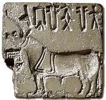
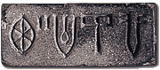

More Indus seals foundAfter the first seal was found at Harappa in 1872, people became very interested in the site. In the next few years many more seals were found at Harappa. These seals were similar in style to the first seal found.  These are two of the seals which were found at Harappa between 1872 and 1920. |